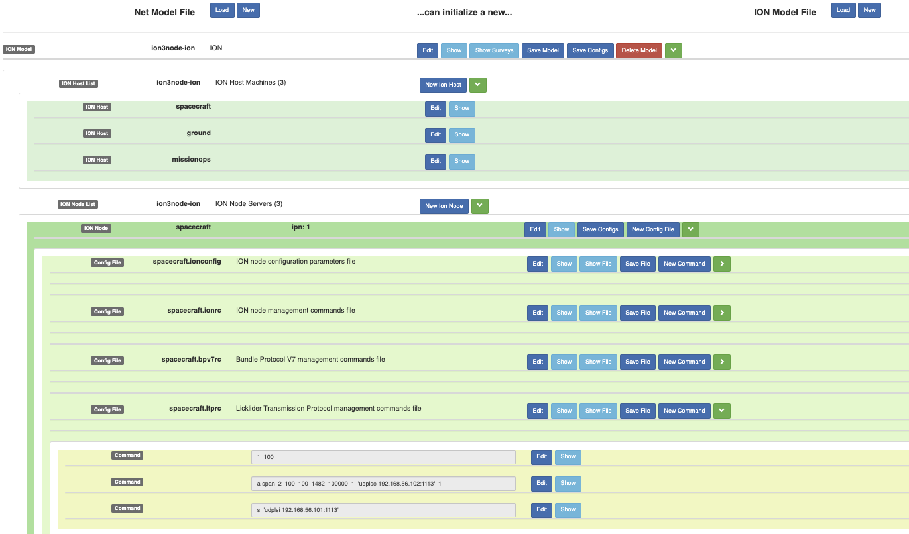
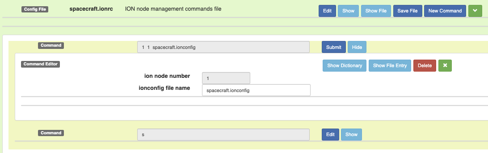
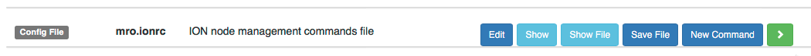

This manual explains the use of the IonConfig Tool, a tool for generating the necessary configuration text files of a network of ION nodes. An ION node is an instance of an ION engine, often with one ION node per host but optionally multiple ION nodes per host. This tool greatly simplifies and accelerates the task of configuring ION nodes, especially a network of interconnected nodes. It accomplishes this by guiding and verifying the data entry of each command parameter and then producing reliably correct output syntax. Perhaps most importantly, the tool helps ensure consistent network-wide configurations by careful control of all cross-references within the model (e.g., node numbers, endpoints, duct names). IonConfig further supports a network perspective with network survey reports of specific topics, such as nodes, commands, endpoints, etc.
This manual is current for ionconfig version 4.8.1 which supports ION version 4.1.1.
The software comes bundled in a tar file, for example ionconfig-1.4.tar. First untar the file into a directory of your choice. The IonConfig tool runs as a single page application within any modern web browser. Simply use the browser's Load File and load the file named index.html of the new directory. The application will begin running in a new tab of the browser.
A single page application runs independently as a desktop application on your local machine. It is not communicating with a web server. If you wish to clear and restart the application, just reload the page with the browser reload. Be sure to save any current work prior to a reload, because it clears the application.
The diagram shows all of the inputs and outputs of the IonConfig tool. IonConfig is a form-oriented editor for building a model of the ION node network and the associated commands that characterize each node. The user performs all editing actions interactively. The Ion Model File is the means of saving the model work between editing sessions, a JSON-format file that the user can inspect and interpret. The Network Model File is an optional input that models the topology of the network which the editor can use to generate an initial skeleton version of the ION model. Once the ION model is developed sufficiently, the user can initiate the generation of the ION-ready Configuration Text Files, including start files for each node. The Configuration Text Files are strictly output results, and do not serve as input to the tool. A hidden input to the tool is the Command Dictionary that defines all the rules for each unique ION command. The editor comes packaged with a command dictionary.
The editor tool is structured as a direct hierarchy, paralleling the implicit organization of ION configuration files. The main structure begins at the top with the Ion Model, followed by its Ion Nodes, each which has various Config Files that in turn contain Commands. Building and editing commands is the primary activity of the IonConfig tool. Given the sheer number of configuration file types and command types, the hierarchy can grow very large for even a relatively small network. The tool manages this problem by allowing the user to expand and contract sections readily with the click of a button. Assembling a new model works in the same top-down fashion: create a new ion model, create a node, add a configuration file and finally construct commands.

While the great bulk of configuration files will exist to support a specific Ion Node, a network will also require at least one globally shared Contact Graph which is a single configuration file. So there is a parallel hierarchy beginning with the Ion Model model, followed by its Contacts, each which has a single Config File that in turn contains Commands. The style and structure of the hierarchy for contact graphs mirrors that for Ion Nodes. While a configuration will use only one contact graph at a time, the model permits the creation of multiple contact graph objects to, for example, define future graph versions.
The Ion Model file is a json format text file that saves all of the Ion configuration details of a single network. The model is effectively the state of the IonConfig tool, so the tool requires an ION Model file, either loaded from prior saved work, or created fresh. The ION Model file is specific to ION configurations. Another model file is the Network Model file that provides an alternative method of initiating a network design. The Network Model file (also json) provides a basic DTN node topology without any ION-specific details. The IonConfig tool can generate an initial ION Model from a Network Model (not supported at this time).
An Ion Model can be deleted from memory by pressing the Delete Model button. The user will be given a warning popup before the model is deleted. If the Ion Model was loaded from a file, that file will remain untouched.
The use of terms such as ION Node, Config File and Command is intended to correspond naturally to the same terms as used by the ION software. At the same time, in the context of the IonConfig tool, these terms correspond to software objects that editor can create, modify or delete in the process of building the model. In this manual, the use of these terms is generally in the sense of objects as seen by the editor.
One likely area of confusion arises with the configuration files. There is the software object Config File as viewed by IonConfig, and then there is the generated text file with ION commands that ION requires. Of course, these generated configuration text files are the main purpose of the tool. In this manual, the term Config File will refer to the editor object while term Configuration Text File will be used for the ION-ready configuration file generated by IonConfig.
The concept of objects is also seen wherever there is the button complex of Edit/Submit and Show/Hide. What exactly is to be edited? The target of Edit (or Show) is the object, either Ion Model, Ion Node, etc. More specifically, it invokes an edit window for direct attributes of the object, not lower-level details of its children. For example, the Ion Node Editor shows fields for the Ion Node Name, Description, Ion Node Num, etc. all of which are direct attributes of the Ion Node object. In order to edit the lower-level details contained within an Ion Node, first expand the list view of its children (Config Files) and take it from there.
The object view is so fundamental to the workings of the IonConfig tool, that all of the user's model state can be captured in a single hierarchical object called the Ion Model. The Ion Model file is the means of saving all of the user's work between edit sessions.
The browser form style is known as Bootstrap, a popular widget library for browser applications. Apart from edit boxes and selections, all actions are initiated by clicking buttons. Buttons are large-ish colored rectangles, while the small-ish uncolored boxes are simple labels to highlight sections of the editor. Don't bother with clicking labels! The button color scheme hints at the the nature of the action.

Most buttons have short descriptions of there action. Note that some buttons toggle between modes such as Edit/Submit or Show/Hide. The Edit/Submit button is a common pattern, where it shows an edit window for the current object such as Ion Node, Config File or Command. The edit window is only for the immediate attributes of the object, such as the Description and Name of an Ion Node, not for internal details like config files. In similar fashion, the Show/Hide button provides a read-only display of an object's immediate attributes.
The green buttons use simple symbols that perform basic window operations. The chevron symbols (> or V) expand or hide the immediate children of an object such as the Commands within a Config File. The cancel symbol (X) is used to cancel an edit operation and close its window.
Editing values is done via data entry fields. To minimize errors, each data entry field is customized to its data type such as number, text, date-time, or a selection list. Sometimes a data entry filed will have further descriptive information such as units or a note.
The editor supports Delete operations for [almost] all objects. The Delete button appears within the corresponding object editor, such as the Command Editor for a Command object. Until the editor supports a general UNDO feature, a delete cannot be reversed, so handle with care. An example of the Delete button is in Buttons and Labels.
The delete operation becomes ever more risky as one moves up the hierarchy, If one deletes a Config File object, it automatically deletes all of its child Commands as well. So, the editor will ask one more time before proceeding with the delete of a high-level object.
The main purpose of the IonConfig tool is to generate the ION-ready configuration text files from the model. There is more than one place to do this, depending on which files one needs. Before getting to that though, let us describe a few features of IonConfig-style configuration text files. Apart from generating the command files reliably in a syntactically correct format and order, each file is annotated with header information. This description establishes the purpose and context of the file at a glance.
# FILE: msl.bprc
# CONTENT: Bundle Protocol management commands file
# FOR: bpadmin
# BUILDER: ION Configuration Editor
# NETWORK: marsnet21
# NODE: Mars Science Lab
# DATE: 2018-02-15 13:06
#
Additionally, each command is separately annotated with a description of each command parameter. This makes it much easier to interpret the command than is possible with just the barebones positional parameters of the actual ION command.
# INITIALIZE
1
#
# HEAPMAX
# [1] max database heap per acquisition : 820 (bytes)
m heapmax 820
#
# SCHEME
# [1] scheme name : ipn [Interplanetary Overlay Network Scheme]
# [2] forwarder command : ipnfw [ION Forwarder]
# [3] admin app command : ipnadminep [ION Admin Endpoints]
a scheme ipn ipnfw ipnadminep
#
# ENDPOINT
# [1] node num : 10
# [2] service num : 5
# [3] bundle disposition : x [discard undeliverable bundles]
# [4] queue receiver task :
a endpoint ipn:10.5 x
Of course, all of this annotation tends to defeat one of the design purposes of the ION command syntax. ION commands are terse by design in order to minimize impact on space links. If that is the concern, it is a simple matter to strip all of the comment lines since every comment line begins with a hash-mark and a blank.
Returning to the issue of generating configuration text files, let us first look at the Config File object. The Save File button will create a text file with the shown name (e.g., msl.bprc) with the annotated file format. Each browser has its own convention for its destination directory, with some using the Downloads directory. For the Config File object, the Save File operation saves that exact file and nothing more. If one wishes to preview the generated file, click the button Show File.

Looking now at the Ion Node object, one clicks the Save Configs button to generate the configuration text files. In this case, the tool generates a file for each Config File child of that Ion Node. At the node level, the tool also generates an ION startup script to invoke the correct ION programs with config files and in the correct order. Assuming there is an associated Contact Graph, the start script will include that as well.
#!/bin/bash
# FILE: start_msl.sh
# NODE: ipn:10 (msl)
# DESC: Mars Science Lab
# DATE: 2018-02-04 10:43
host=`uname -n`
wdir=`pwd`
echo "Starting ION node ipn:10 (msl) on $host from $wdir"
bpadmin msl.bprc
sleep 1
ionadmin msl.ionrc
sleep 1
ipnadmin msl.ipnrc
sleep 1
ltpadmin msl.ltprc
# global contact graph
sleep 1
ionadmin myglob2.cg
Finally, looking at the Ion Model object, one clicks the Save Configs button to generate the configuration text files. As might be expected, the tool generates a file for each Config File child of each Ion Node child of the full network. Likewise, the tool generates the ION startup script for each child Ion Node. In other words, it produces all of the defined configuration text files and startup scripts for the entire network.
To be specified.
This a json-format text file that represents the all of the defined nodes, configuration files and commands defined by the user. It is in a form so that the editor can be quickly restored to its last edit state before the model was saved. The model is not to be confused with generated ION configuration files, the ultimate output product of the IonConfig tool. The user must save a copy of this model file in order to resume editing at some future time.
By design, the JSON layout is fairly repetitive and simple. It is quite reasonable to extend the model with a text editor as an alternative to using the IonConfig to build one command at a time. However, reasonable care must be taken to maintain the file as valid JSON syntax. If the syntax is valid, the IonConfig tool should be able to ingest the new model and then perform all of its usual functions.
A few excerpts of a sample ION Model file follow.
The first excerpt shows the first several lines of the file. A JSON file uses two grouping patterns where {...} signifies an object and [...] signifies a list. As in the editor, we can see the familiar hierarchical structure appearing in this example, with the ION Model at the top, followed by its child Ion Nodes, each with Config Files and then finally Commands. Likewise, as each new object appears, one first sees its direct attributes, then followed by its children objects.
{
"ionModelName": "marsnet21",
"ionModelDesc": "Mars Net 2021 ION Model",
"nextNodeNum": "102",
"nodes": [
{
"nodeName": "msl",
"nodeDesc": "Mars Science Lab",
"nodeNum": "10",
"ipAddrs": [
"ptl21"
],
"configs": {
"bprc": {
"commands": [
{
"type": "initialize",
"lastUpdate": "2017-02-26T12:42",
"parameters": []
},
{
"type": "heapmax",
"lastUpdate": "2017-02-26T12:42",
"parameters": [
"820"
]
},
This next excerpt provides a couple of examples of command objects. Basically, it is a valid command if the type is known and it has right list of parameters, so the command patten is very repetitive and simple. So how does the tool know the proper syntax for these commands or the meaning of each parameter? All of this depends on the Command Dictionary that comes packages with the tool.
{
"type": "endpoint",
"lastUpdate": "2018-01-06T13:07",
"parameters": [
"10",
"99",
"q",
"snap99"
]
},
{
"type": "protocol",
"lastUpdate": "2017-03-01T13:11",
"parameters": [
"ltp",
"3000",
"100",
"40000"
]
},
A JSON file is a standard text format for representing objects in the JavaScript language, namely the JavaScript Object Notation. It has fairly simple structural rules, so it is practical to read and edit. With some care, it is okay to edit a JSON file outside of the tool. While everything can be done safely within the tool, it may be quicker to do bulk updates with a text editor. This is strictly optional. Any standard text editor will do the job, but it is even safer to use a JSON-aware editor to catch annoying syntax errors.
The ION engine runs on a variety of platforms, including Windows machines and Unix machines. This fact brings back the old problem that text file line termination differs between Windows vs. Unix. The current IonConfig does not solve this problem. Configuration text files generated on a Windows machine will not be accepted by a Unix version of ION, and vice versa. The best advice for now is to build Windows configurations with IonConfig on a Windows machine, and likewise, build Unix configurations with IonConfig on a Unix machine.. Otherwise, one must resort to unix2dos and dos2unix tools.
The Command Dictionary is a collective term for a set of JSON files defining command patterns, command parameters and any special features of a command (e.g. a Clone Value). Thedictionary provides the editor with all of the details needed to label parameters, assign the correct input field, and ultimately to assemble a complete command. The features of the Command Dictionary will be described more completely in a separate document. The user does not need to do anything about the dictionary since it comes with the package and is loaded automatically. However, the user may find it useful to inspect dictionary entries to better understand a command. For this, each Command Editor window includes a Show Dictionary button to bring up the dictionary entry for that command.
A Survey Report provides a network-wide tabular report focused on some specific narrow topic. Current examples include Nodes, Endpoints, Configs, Commands, Inducts, Outducts, Spans and Alerts. These "bird's-eye-view" of various network features are further means to keep an on the big picture. To access a Survey Report, click the Show Surveys button in the Ion Model section. The survey topics will then appear as a series of buttons immediately below. Click a topic button, and the survey report for that topic appears in its own floating viewer window, a so-called popout window. The topic button will disappear.
One can have any number of survey reports open at one time. To close a survey report window, click the red X in the upper left-hand corner of the window. The window will close, and the survey topic button reappears. Each survey report is an active display of the current model, so if any relevant feature changes in the model while the survey report is active, the report automatically updates.
Note the special survey report called Alerts. This report is a summary of all known problems and omissions in the model. This is handy for troubleshooting a model.
The general approach in the editor is to avoid model problems with prevention. Parameter value types, selection lists, and validation rules are some of the methods used to help the user avoid basic mistakes. Most of the other likely model problems will be acts of omission. For these sorts of problems, the editor provides several methods to eaily recognize and and correct these errors.
A common problem is a Command with a required parameter missing. In any place where the ION-ready command appears, the editor will highlight the missing parameter with "??" in the location that a correct parameter value would appear. Also, such a Command object will have a red "??" label attached to its section. The survey report for Commands includes a column to flag any command with a missing parameter.
The Alerts Survey provides a more general picture of model problems, summarizing all of the known problems across the entire model. In addition to noting any incomplete commands, it will identify any missing Config Files, or missing Commands required by an existing Config File. Recalling that all survey reports are active displays, one can keep the Alerts Survey active while fixing problems. Each successful fix will cause the corresponding alert to disappear from the survey.
An important integrity feature of the IonConfig tool is the Clone Value. There are many cross references between the configurations of Ion Nodes that establish the interconnections among the nodes. These cross references include node numbers, endpoint ids, and duct names. To maintain the integrity of the entire network, such references must be valid when created and must be maintained in a valid state despite subsequent changes to the model. For example, if a command parameter is to identify the endpoint id of another node, then that endpoint id should already exist in the model. The IonConfig solution to this problem is require any such reference value to be selected from a list of known valids. The tool automatically constructs a special object called Clone Value for any known key value like a node number. It always then populates the reference selection lists from the current set of Clone Values.
Selecting a valid reference is the easy case. The difficult case is when one wants to change a key value like node number. Now one is faced with the problem of tracking down all the references and correcting the values. This can be a messy, error-prone process. Fortunately, the IonConfig tool records every use of a Clone Value. When a Clone Value is changed it automatically updates the references for each command that uses that Clone Value.
Admittedly, there is some inconvenience to this scheme, since the editor effectively imposes some restrictions on the order in which commands can be constructed. For example, one is not able to reference a node until that node exists. so one could end up bouncing back and forth in different sections of the editor. Just remember that the editor does allow one to create incomplete commands, and then move on. Such incomplete commands are clearly flagged, so one could always return to fill in the blanks systematically.